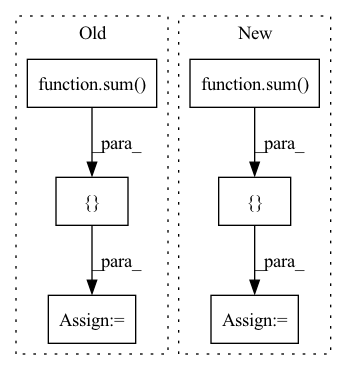

Pattern ID :1324
Before Change
def forward(self, x):
if self.training:
total_blocks = sum( [len(sx) for sx in x])
mask_size = torch.Size([ total_blocks *= mask[mask_id]
mask_id += 1
return x, mask
return x, NoneAfter Change
def forward(self, X):
if self.training:
blocks_per_mod = [sx.shape[1] for sx in X]
mask_size = torch.Size([ X[0].shape[0], sum( blocks_per_mod) ])
binomial = torch.distributions.binomial.Binomial(probs=1 - self.p)
mask = binomial.sample(mask_size) * (1.0 / (1 - self.p))
mask_shapes = [list(x.shape[:2]) + [1] * (x.dim() - 2) for x in X]
grouped_masks = torch.split(mask, blocks_per_mod, dim=1)
grouped_masks = [m.reshape(s) for m, s in zip(grouped_masks, mask_shapes)]
X = [x * m for x, m in zip(X, grouped_masks)]
return X, grouped_masks
return X, None
In pattern: SUPERPATTERN
Frequency: 4
Non-data size: 6
Instances Fragment ID: 4633168
Project Name: anita-hu/msaf
Commit Name: a2c91bd6e186680ca2c41bbf22c9b57aff4654d2
Time: 2020-12-30
Author: anitahu113@gmail.com
File Name: MSAF.py
M Class Name: BlockDropout
N Class Name: BlockDropout
M Method Name: forward(2)
N Method Name: forward(2)
M Parent Class: nn.Module
N Parent Class: nn.Module
M File Name: MSAF.py
N File Name: MSAF.py
M Start Line: 40
M End Line: 49
N Start Line: 39
N End Line: 47
Before Change
x_residual = x_residual + x
in_channels = growth_rate[idx]
stacked_channels = sum( growth_rate[idx+1:])
sections = [ in_channels, stacked_channelsAfter Change
x = input
else:
_in_channels = growth_rate[idx - 1]
sections = [ _in_channels, sum( growth_rate[idx:]) ]
x, x_residual = torch.split(x_residual, sections, dim=1)
x = self.net[idx](x) Fragment ID: 4633166
Project Name: tky823/dnn-based_source_separation
Commit Name: 3bac874df403a2b5648fd98049865790c104ed55
Time: 2021-10-16
Author: 40362510+tky823@users.noreply.github.com
File Name: src/models/d2net.py
M Class Name: D2Block
N Class Name: D2Block
M Method Name: forward(2)
N Method Name: forward(2)
M Parent Class: nn.Module
N Parent Class: nn.Module
M File Name: src/models/d2net.py
N File Name: src/models/d2net.py
M Start Line: 174
M End Line: 188
N Start Line: 187
N End Line: 195
Before Change
x_residual = x_residual + x
in_channels = growth_rate[idx]
stacked_channels = sum( growth_rate[idx+1:])
sections = [ in_channels, stacked_channelsAfter Change
x = input
else:
_in_channels = growth_rate[idx - 1]
sections = [ _in_channels, sum( growth_rate[idx:]) ]
x, x_residual = torch.split(x_residual, sections, dim=1)
x = self.net[idx](x) Fragment ID: 4633167
Project Name: tky823/dnn-based_source_separation
Commit Name: 3bac874df403a2b5648fd98049865790c104ed55
Time: 2021-10-16
Author: 40362510+tky823@users.noreply.github.com
File Name: src/models/d2net.py
M Class Name: D2BlockFixedDilation
N Class Name: D2BlockFixedDilation
M Method Name: forward(2)
N Method Name: forward(2)
M Parent Class: nn.Module
N Parent Class: nn.Module
M File Name: src/models/d2net.py
N File Name: src/models/d2net.py
M Start Line: 75
M End Line: 89
N Start Line: 84
N End Line: 92
Before Change
warnings.warn("We will change the network architecture.", DeprecationWarning)
def forward(self, input):
stacked = []
x = self.band_split(input)
for idx, key in enumerate(self.bands[:-1]):
_x = self.net[key](x[idx])
stacked.append(_x)
stacked = torch.cat(stacked, dim=2)
key = self.bands[-1] // "full"
x = self.net[key](input)
x = torch.cat([stacked, x], dim=1)
x = self.d2block(x)
output = self.gated_conv2d(x)
return output
After Change
_, _, n_bins, _ = input.size()
sections = [ sum( sections) , n_bins - sum( sections) ]
x_valid, x_invalid = torch.split(input, sections, dim=2)
x = self.band_split(x_valid) Fragment ID: 4633164
Project Name: tky823/dnn-based_source_separation
Commit Name: 8fb5cd5f4f8b4a435d058aef6204904f657abea0
Time: 2021-06-06
Author: 40362510+tky823@users.noreply.github.com
File Name: src/models/d3net.py
M Class Name: D3Net
N Class Name: D3Net
M Method Name: forward(2)
N Method Name: forward(2)
M Parent Class: nn.Module
N Parent Class: nn.Module
M File Name: src/models/d3net.py
N File Name: src/models/d3net.py
M Start Line: 70
M End Line: 85
N Start Line: 73
N End Line: 97